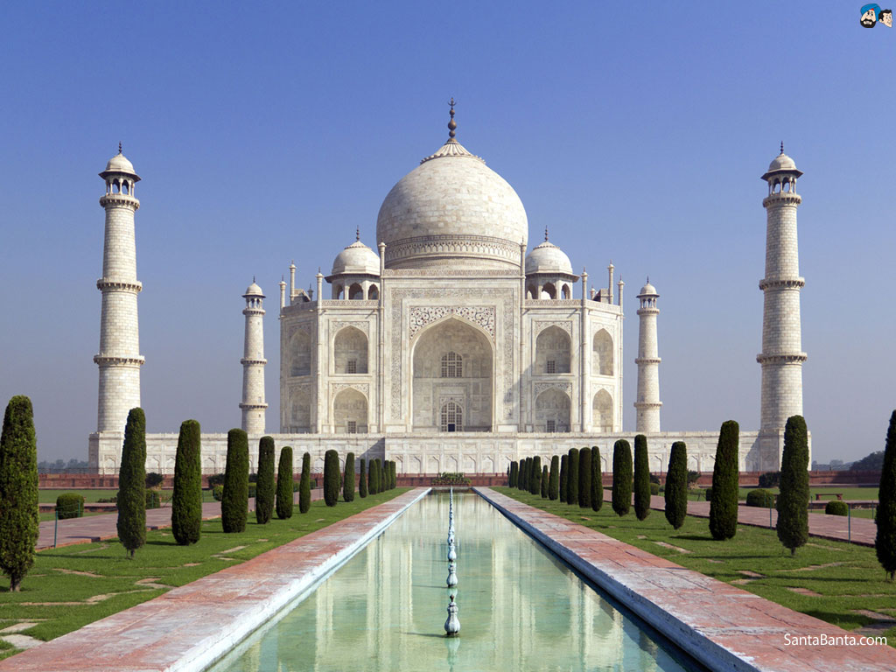

Айфеловата кула е метална решетъчна кула с височина 324 m,
издигната в северозападния край на парка „Марсово поле“ в Париж, край река Сена, в 7-ми арондисман.

Тадж Махал е мавзолей в град Агра, Индия, построен от моголския владетел Шах Джахан в памет на
любимата му съпруга Мумтаз Махал.